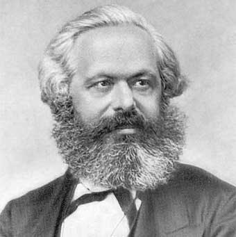

El paulatino y ya casi evidente fracaso de las supuestas aplicaciones prácticas de sus ideas políticas y económicas no debe ensombrecer la talla como pensador revolucionario de Karl Marx, cuya obra significó en las ciencias socioeconómicas un vuelco similar al producido por Freud en la psicología o Einstein en la física. Marx desenmascaró los dogmas de la economía clásica y reveló desde una perspectiva eminentemente científica las injusticias inherentes al sistema capitalista; con él, la doctrina económica dejaba de ser una velada defensa de intereses particulares, y la ética política una especie de una ciencia infusa. Achacar a Marx alguna responsabilidad en el establecimiento de regímenes comunistas es olvidar que falleció en 1883, y que la praxis revolucionaria de la centuria siguiente se basó en derivaciones de sus ideas que él nunca hubiera avalado.
Un joven hegeliano
Georg W. F. Hegel acababa de morir y el ambiente universitario berlinés era fervorosamente hegeliano, aunque cada grupo o cenáculo estudiantil interpretaba las ideas del creador de la dialéctica a su manera. El joven Marx se vio inmerso en esas discusiones, que lo llevaron a una profunda depresión y al primer descalabro de su frágil salud. En prenda a su rigor intelectual, aceptó incorporarse a «una concepción que odiaba» (según carta a su padre de noviembre de 1837) y se unió al grupo de seguidores del joven profesor Bruno Bauer, que sostenía las ideas más progresistas y democráticas de la obra de Hegel y el cuestionamiento del pensamiento matemático y formal.
El Manifiesto comunista

La primera época en Londres fue bastante dura para Karl Marx, sumido en la pobreza, aquejado por su mala salud y acechado por los acreedores. La familia sobrevivió seis largos años en dos míseros cuartos del Soho, gracias a las ayudas que enviaba Engels desde la factoría de su padre en Manchester, donde trabajaba como contable. También colaboraron a su sustento Wilhelm Wolff, amigo de Karl, y esporádicos envíos de los parientes de Jenny. Dos de los cuatro niños de los Marx murieron en esos años de privaciones y sufrimientos.